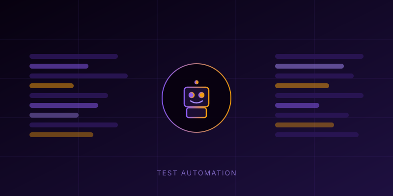
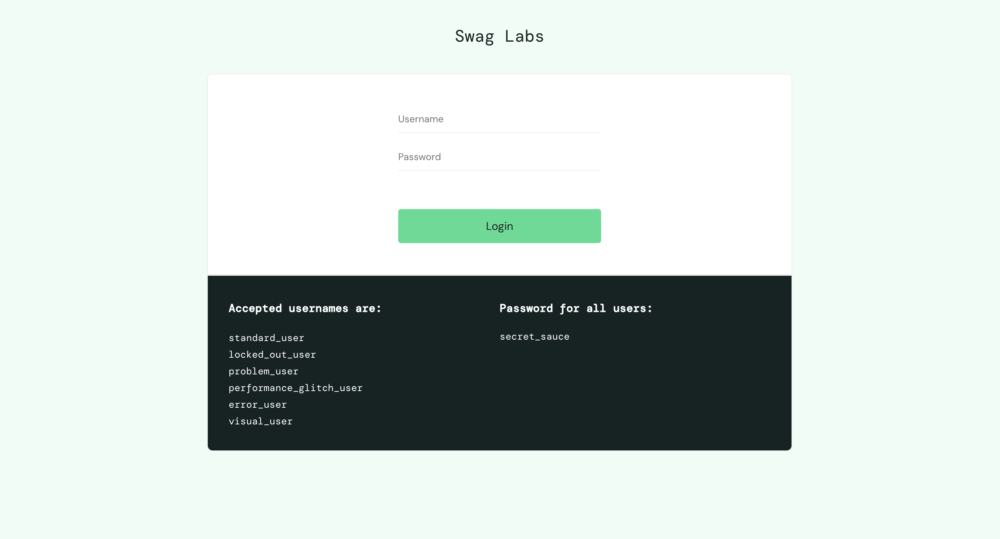
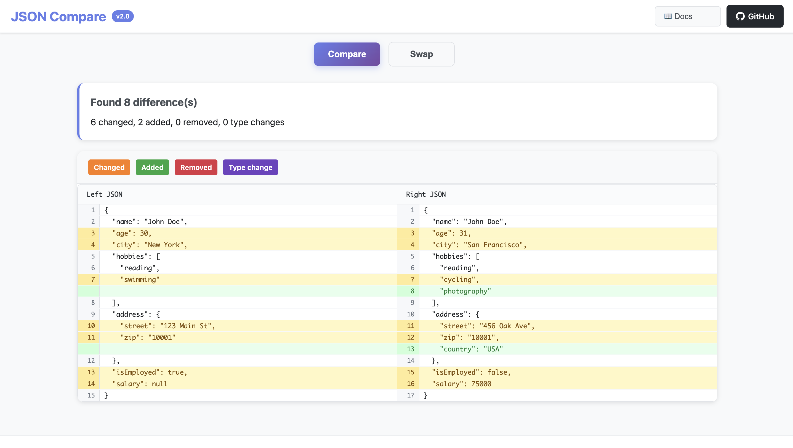
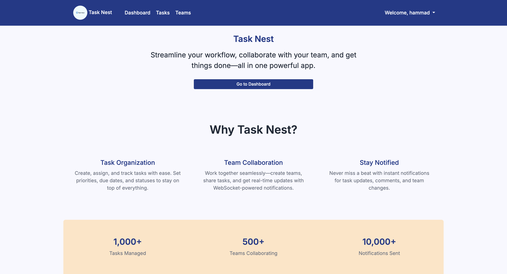

I build test automation frameworks, scraping systems, and CI/CD pipelines that scale. Currently at Arbisoft — solving hard automation problems across web, mobile, and data extraction.
QA Automation Engineer at Arbisoft with 3+ years of experience building automation frameworks, scraping systems, and CI/CD pipelines across web and mobile platforms. I work in TypeScript, JavaScript, and Python using Playwright, Cypress, WebdriverIO, Selenium, and Appium.
I don't just write tests — I design the architecture. I've built abstraction wrappers that made framework migrations a single-file change, consolidated 23 payer integrations under one system in 2 weeks, and written custom anti-detection scripts that bypassed AWS CAPTCHA, Cloudflare, and reCAPTCHA. I treat automation as an engineering problem, not a scripting task.
Bachelor's in Computer Engineering from UET Lahore. Open source contributor to the WebdriverIO repository.

Designed a wrapper layer over Cypress enabling zero-touch framework migration to Playwright. Adopted by multiple Arbisoft projects. Single-file update replaces the underlying framework across the entire repo.
Custom bot engine with navigator mocking, dummy extension injection, rotating residential proxies, and Patchright stealth integration. Bypassed AWS CAPTCHA, Cloudflare, and reCAPTCHA v2/v3 across multiple production sites.
Enterprise-grade automation framework using factory pattern to unify Android, iOS, and web test configurations. Parallel execution via Selenium Grid. Allure reporting with CI/CD integration.

Comprehensive test automation framework using Python and Playwright with Page Object Model, parallel execution, Allure reporting, and GitHub Actions CI/CD integration.

Professional JSON comparison tool with GitHub-style diff visualization, supporting both CLI and web interfaces with advanced diff algorithms.

Full-stack task management application with real-time updates via WebSockets, team collaboration features, and comprehensive project tracking.
mapSeries and eachSeries for reliable
sequential scraping flows.
find over filter+[0], use unknown
over any). Adopted across projects.
Looking for a QA Automation Engineer who can build frameworks, not just write tests? Let's talk about what you're building.